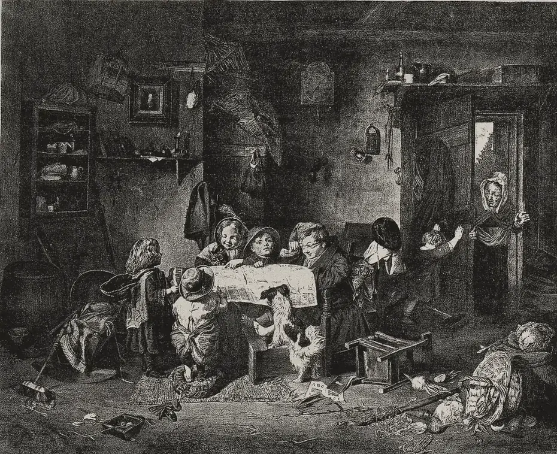

· Edición 27 · 3 min de lectura
La semana: diez temas, lo que cambió y lo que viene

Grabado según una pintura de Alexander H. Burr, 1891 · CC BY 4.0, colección Wellcome, vía Wikimedia Commons
Diez temas, lo que cambió y lo que viene
En pocas palabras. Qué contamos, qué se movió y qué se decide en los próximos días.
Cómo se conecta. Agua, luz y diésel son tres caras de lo mismo: El Niño y la energía cara, y la pregunta de quién paga. Y dos temas, los desaparecidos y la comida escolar, se deciden en la misma votación del presupuesto, del 13 al 15 de octubre.
Lo que pasó esta semana.
- Gas. Imaginamos una regla para buscar gas que dure más que un gobierno. Leer la edición 16
- Agua. El Niño ya obliga a repartir el agua por turnos en Medellín, Cali y 35 municipios de Cundinamarca y Boyacá. Leer la edición 18
- Brasil. Flávio Bolsonaro y Lula van a segunda vuelta; allá se juega parte de nuestra lluvia, el comercio y la frontera. Leer la edición 19
- EPS. El Gobierno propone prestarles para pagar medicamentos pendientes, como en 2013 y 2019. Leer la edición 20
- Drones. 442 ataques con explosivos en casi tres años y una ley quieta. Leer la edición 21
- Desaparecidos. De cada 100 cuerpos recuperados, 15 han vuelto a sus familias, y el presupuesto de 2027 recorta los laboratorios. Leer la edición 22
- Consulta previa. Nadie sabe cuántas hay abiertas; el Gobierno promete destrabarlas en 90 días. Leer la edición 23
- Luz. XM ve riesgo de que falte energía entre febrero y abril de 2027; ahorrar a tiempo ayudó a evitar un racionamiento en 2016. Leer la edición 24
- Diésel. El subsidio cuesta unos 9,7 billones al año; con la gasolina, subir de a poco funcionó. Leer la edición 25
- Comida escolar. Unos 600.000 estudiantes podrían terminar el año sin PAE; Brasil gira el dinero por día de clase. Leer la edición 26
Qué cambió.
- Fondo Milagro. Fiducoldex, contratada de forma directa el 5 de octubre, lo administra, y el 6 recibió 624.656 millones de pesos de un crédito del Banco Mundial.
- FMI. El 6 de octubre empezaron en Washington las reuniones con el Fondo. No hay acuerdo anunciado.
- EPS. Los comentarios al crédito cerraron el 7 de octubre; la resolución final no ha salido.
- Emergencia por El Niño. Se anunció para el 28 de septiembre y no encontramos el decreto. Ya cuenta como plazo incumplido.
Para tener presente.
- Un anuncio no es una medida: «el Gobierno estudia» no tiene fecha ni firma.
- Una planta nueva no prende un bombillo en febrero; el ahorro sí.
- «Cobertura histórica» no dice cuántos días comieron los niños.
- En la página Memoria entraron tres promesas que siguen esperando (el precio real del diésel para camionetas, la comida escolar desde el primer día y la emergencia por El Niño) y estos tres «Ojo con el cuento».
Lo que viene.
- Martes 13 de octubre. La Comisión de Concertación revisa las propuestas de salario mínimo para 2027; los gremios hablan de 8% a 9,5%.
- Del 13 al 15 de octubre. Las plenarias votan el presupuesto de 2027, con la Unidad de Búsqueda, la JEP y el PAE. El límite es el 20.
- Hacia el 14 de octubre. La CAR dijo que decidiría si recorta concesiones de agua en 35 municipios; la fecha es aproximada.
- Domingo 25 de octubre. Segunda vuelta en Brasil.
- Hasta noviembre. Gobernaciones y alcaldías deberían tramitar las vigencias futuras para que el PAE de 2027 empiece el primer día.
- Sin fecha. El crédito a las EPS, el precio del diésel para particulares, la ley de drones y la nueva regla del cargo por confiabilidad.
Para conversar
La pregunta. De las promesas de esta semana, ¿cuál cree que llega primero a cumplirse, y cuál se queda esperando?
Nota metodológica
Esta edición es un resumen de las ediciones 16 y 18 a 26, publicadas entre el 3 y el 9 de octubre de 2026. La 17, del domingo 4, ya era un repaso. No hicimos una investigación nueva para los temas: las cifras vienen de esas ediciones y de sus fuentes. Lo de «Qué cambió» sale de las actualizaciones de las ediciones y de la revisión de decisiones que hicimos hoy; el detalle y sus límites están en cada edición.
El grabado reproduce una pintura del escocés Alexander H. Burr, publicada en 1891 en un suplemento del Glasgow Weekly Herald con el título «Políticos»: unos niños juegan a discutir las noticias alrededor del periódico. Es de otra época y lo usamos para evocar el repaso de la semana; le recortamos el título y los márgenes.
¿Le interesa ver las fuentes?
12 fuentes: 4 oficiales, 8 de prensa.
- Oficial Presidencia de la República (informe de la ANH y el Ministerio de Minas). Reservas de petróleo aumentaron a 7,4 años y las de gas a 5,9 años
- Prensa Infobae. La CAR podrá reducir o suspender concesiones de agua en 35 municipios por desabastecimiento hídrico
- Oficial Tribunal Superior Electoral de Brasil (TSE). Flávio Bolsonaro (PL) e Lula (PT) vão disputar o 2º turno para a Presidência da República
- Prensa Vanguardia. Gobierno propone línea de crédito para que las EPS paguen deudas pendientes
- Prensa Telecafé. Colombia registra 442 ataques con drones en casi tres años, según informe de inteligencia
- Oficial Unidad de Búsqueda de Personas dadas por Desaparecidas. Reducción de la inversión para 2027 pone en riesgo la búsqueda de más de 137.000 personas desaparecidas
- Prensa El Colombiano. Más de 13.000 consultas previas en 15 años: así está el debate para reformar este trámite en Colombia
- Oficial Superintendencia de Servicios Públicos Domiciliarios. Sobre-remuneración y déficit de respaldo físico: evaluación del cargo por confiabilidad (2006-2026)
- Prensa Portafolio. El precio de no subir el ACPM: el subsidio podría costarle al Estado 9,7 billones en un año
- Prensa Asuntos Legales. Contraloría detectó hallazgos fiscales por 39.139 millones en recursos del PAE
- Prensa El Heraldo. Arrancan las reuniones del Ejecutivo colombiano con el FMI
- Prensa La República. Los gremios ven una posible alza del salario mínimo para 2027 entre 8% y 9,5%